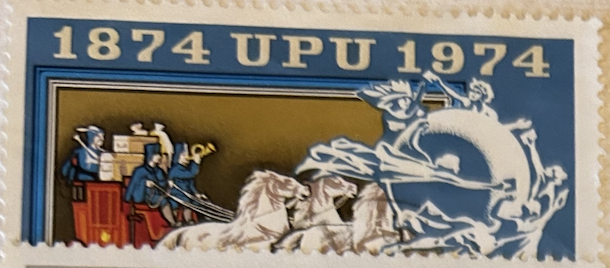
| SOURCE | TITLE| IMAGE MATCH | click to source page |
| Akron Beacon Journal | Photos: A look at Unhitched Brewing Co. | 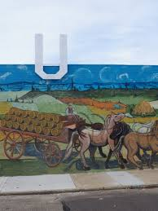 |
| X | A message from BOT Chair, Mori Hosseini: As many of you are aware, the State of Florida Board of Governors on Tuesday declined to confirm Dr. Santa Ono as president of the | |
| unodos.org | How to Download the UNODOS App | UNODOS | 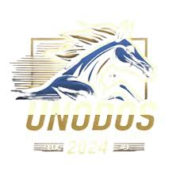 |
| CEEOL | Reining in the Enlargement Vetoes: | |
| Bible Art | Acts 9 Artwork | Bible Art | 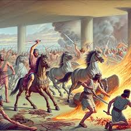 |
| What are the first printed maps of each state in the Library of Congress? | 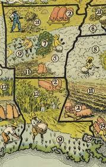 | |
| Anvgamer (anvgamer) – Profile | Pinterest | ||
| Food. Curated. | THE PROGRESSO™ SOUP | 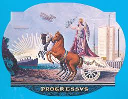 |
| Sports Illustrated | Havre Blue Ponies Football (Havre, MT) Rankings - High School On SI | |
| Artvee | A. Hoen & Co. - Artvee | 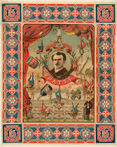 |
| London Transport Museum | Poster; Thus off they went and four in hand; Green line, by Jean Dupas, 1933 | London Transport Museum | 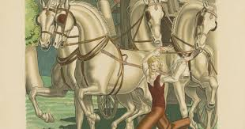 |
| Wikimedia.org | Category:Édouard Lalo - Wikimedia Commons | 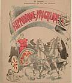 |
| 5 Minute English | The Surprising Origins of Everyday English Slang – 5 Minute English | 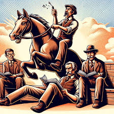 |
| Classmates.com | 1978 yearbook from Troy High School from Troy, Kansas | 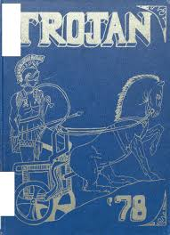 |
| 74 Shirt Design ideas | shirt designs, design, horse illustration | ||
| rectoversoblog.com | The Bois de Boulogne and Sem au Bois: Belle Epoque Paris and the Pageantry of the Passing Spectacle | 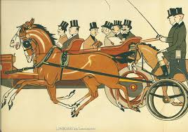 |
| prints-online.com | National Health Insurance Stamp Print 1911. Art Prints, Posters & Puzzles from Mary Evans | 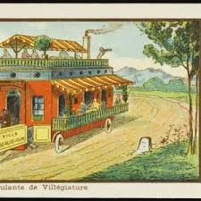 |
| 50 Watts | Salvador Bartolozzi's Pinnochio - 50 Watts | 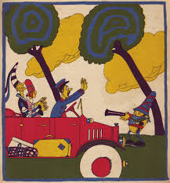 |
| My Dead at Alpine Valley 1987 artwork : r/gratefuldead | 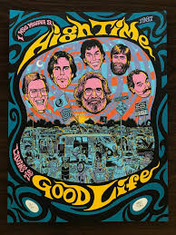 | |
| Classmates.com | 1975 yearbook from Crestview High School from Convoy, Ohio | 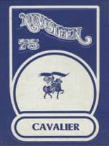 |
| The European Conservative | The Return of a Right-Wing That Is Skeptical of Capitalism ━ The European Conservative | 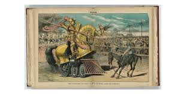 |
| hydroconsult-hydraulic-pneumatic.com | Brooks Histographs Unique Guide Royal Families of England and Great Britain - hydroconsult-hydraulic-pneumatic.com | 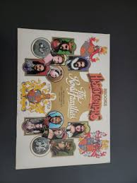 |
| Photo by aidakadyrbekova❤️ (@soap_salon_kg) · February 13, 2026 | 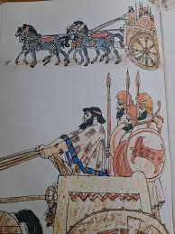 | |
| Tavern Trove | 1945 Tivoli Beer 113mm CO-TU-7 Match Cover Denver Colorado sold at auction from 31st May to 19th June | Tavern Trove | 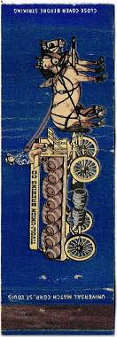 |
| Representing Astera Labs in a fireside chat | Dr. Shivananda Koteshwar | 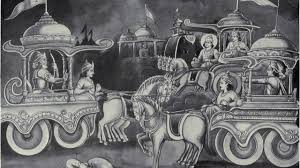 | |
| these 2 prints one from 1825 and the other 1840 appear to show brass decorations, rosettes to one and a throat brass to the other. are these classed as horse brasses since | 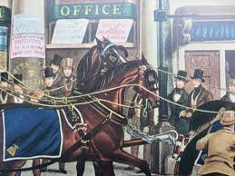 | |
| LiveAuctioneers | Jim Bonner (new Orleans, Mississippi), "the Praline | 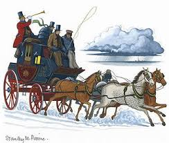 |
| eBay | MYLAU NOTGELD 5, 10, 25, 50 PFENNIG 1921 EMERGENCY MONEY GERMANY BANKNOTES (9982 | eBay | 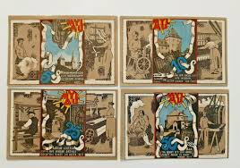 |
| 1stDibs | Mentmore Sale, Sotheby's Catalogues Volumes 1-4 at 1stDibs | mentmore towers for sale, otheon map, sotheby's auction catalogs | 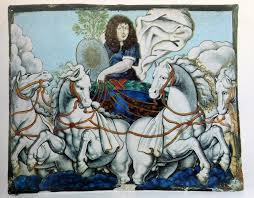 |
| ProBoards | The "ultimate" Duck family tree | The Feathery Society - Disney Comics English Fan Forum | 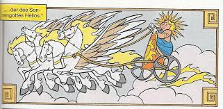 |
| Bible Art | Proverbs 6:1 Artwork | Bible Art | 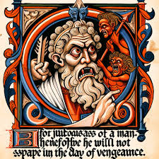 |
| Le Monde.fr | Exhibit: Yesterday's pharaohs, today's superstars | 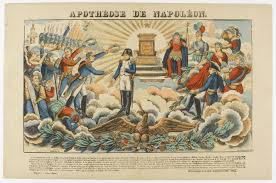 |
| Retroavangarda | Andrzej Wieteszka - Bob Dylan :: Retroavangarda | 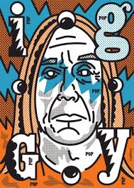 |
| YouTube | Richard the Lionhearted: Ja nuns hons pris - YouTube | 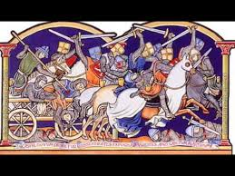 |
| Graduate Students United at UChicago (@uchicagogsu) · Chicago, IL · Instagram photos and videos | ||
| Invaluable.com | Sold at Auction: Charles Carson, Charles Carson (*1957),'Dreispanner' / 'A cart with 3 horses' | 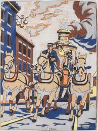 |
| Apple | Percy Jackson University“-Podcast – Apple Podcasts | |
| Beautiful Books | Tara Books: Affordable Handcrafted Treasures | Beautiful Books | 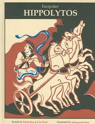 |
| prints-online.com | Removals Art Prints, Posters & Puzzles | 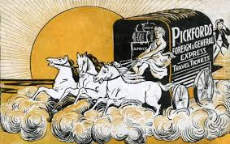 |
| LessWrong | The Power to Understand "God" — LessWrong | 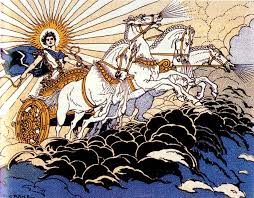 |
| WordPress.com | نقاشی های قدیمی یوفو | دنیای اسرار آمیز | 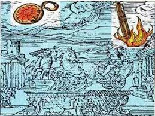 |
| BillyBase | Billy Strings London 2025 - Poster Regular - BillyBase | 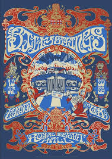 |
| Stopped by here while on vacation. | 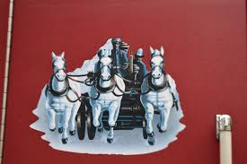 | |
| Wikipedia | Henri Giraud - Wikipedia | 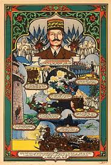 |
| Etsy | Greek Mythical Tiles - Etsy | 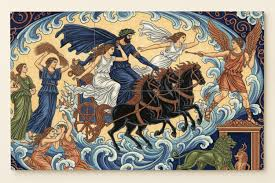 |
| Unsplash | Chariot pulled by four horses with figures photo – Free Art Image on Unsplash | 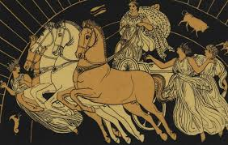 |
| Retiring at 64 after long career | 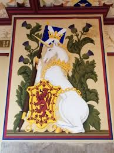 | |
| Wallpapers.com | Download Image Standing strong in Spiritual Warfare Wallpaper | Wallpapers.com | 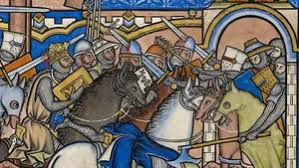 |
| WILX | ThrowbackThursday - MSU vs. Notre Dame: November 19, 1966 | 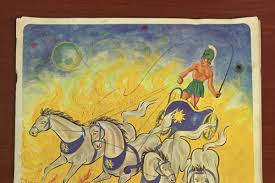 |
| Just looking through Union High yearbooks | 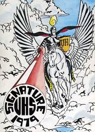 | |
| MutualArt | Josef Ullmann - 275 Artworks for Sale & Sold | 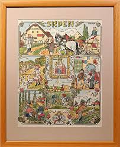 |
| National Gallery of Art (.gov) | Silver Snuff Box by Lawrence Flynn | 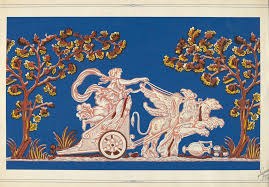 |
| Bridgeman Images | Image of Hastings - Arrow Pierces King Harold's Eye | 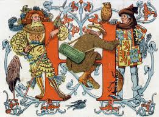 |
| Wikipedia | File:Carl Sandburg's Rootabaga Stories (1922), Frontispiece.jpg - Wikipedia | 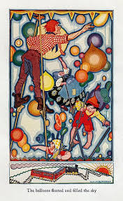 |
| Getty Images | 52 Stories Of Hercules Stock Photos, High-Res Pictures, and Images - Getty Images | 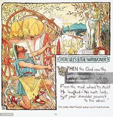 |
| Beohar Rammanohar Sinha, a visionary artist and patriot, immortalized India's cultural and spiritual heritage through his iconic illustrations in the original Constitution of India. Discover his extraordinary journey and timeless contributions in | 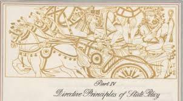 | |
| MutualArt | Stanisław Ostoja-Chrostowski | Bookplate of Ralf Worsvick-Pankearson | MutualArt | |
| X | Mike Willcox https://t.co/iaXh6SXuMl | |
| MutualArt | Otto Schubert | Sommernacht (1925) | MutualArt | |
| CampVine | Home - CampVine |
,_Frontispiece.jpg){kind=link}